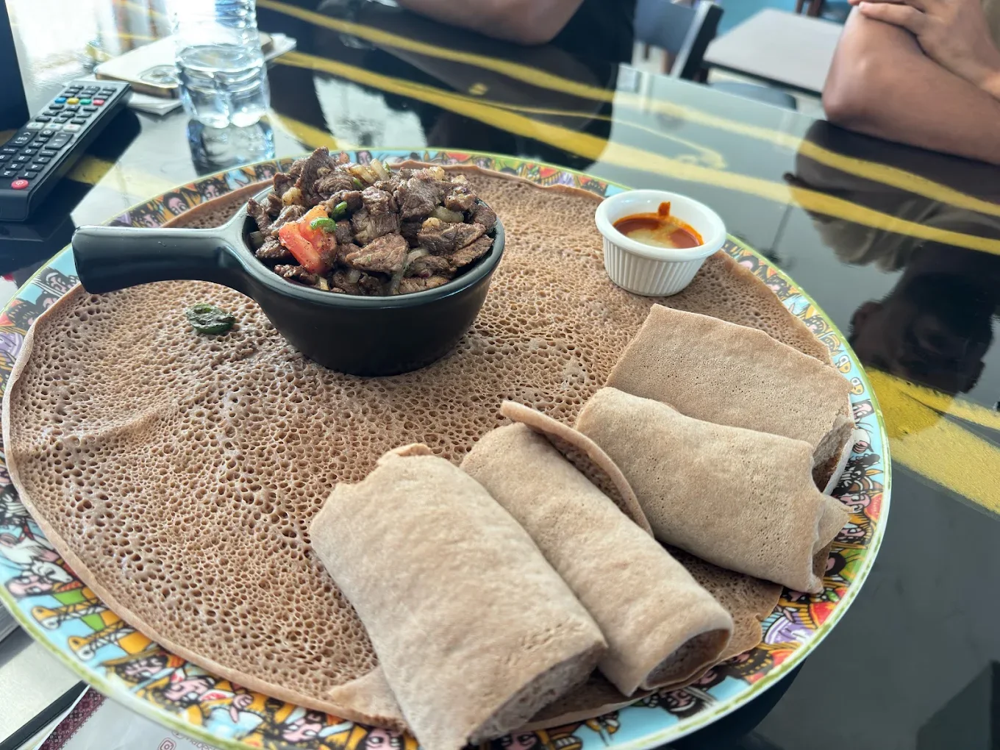
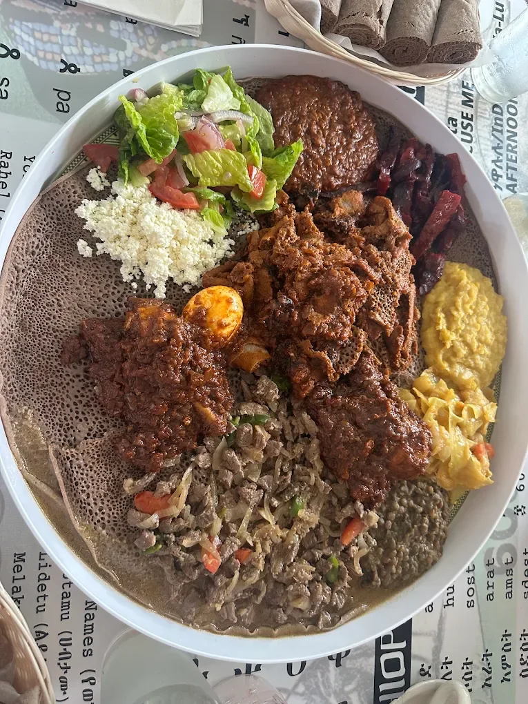
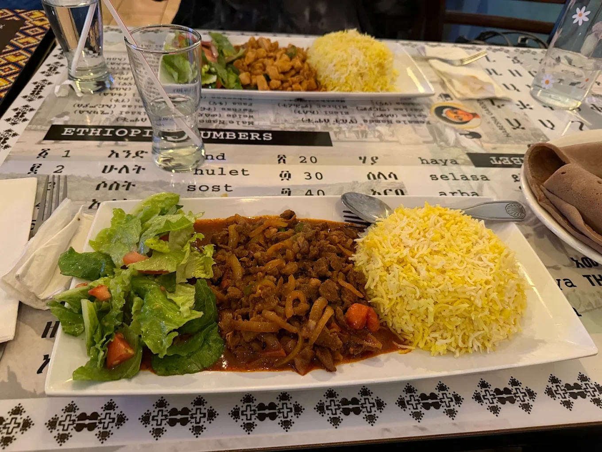
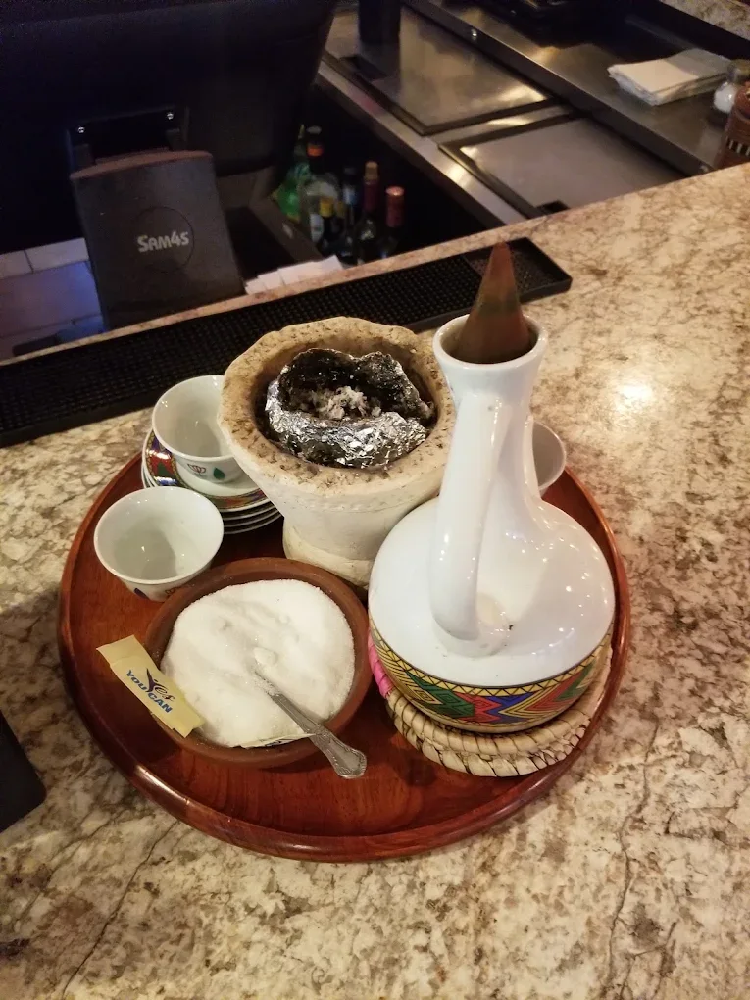
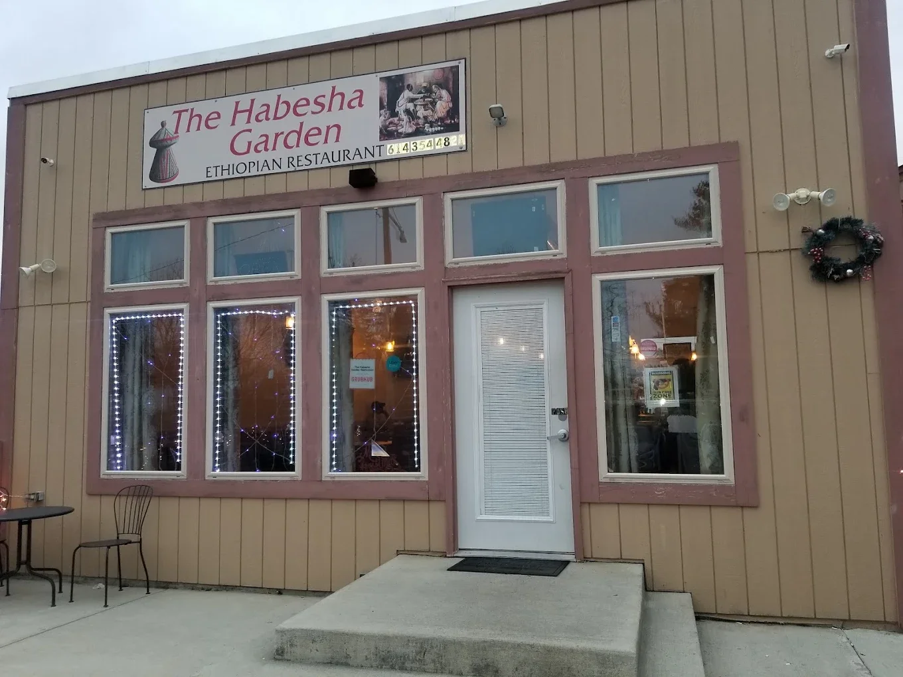
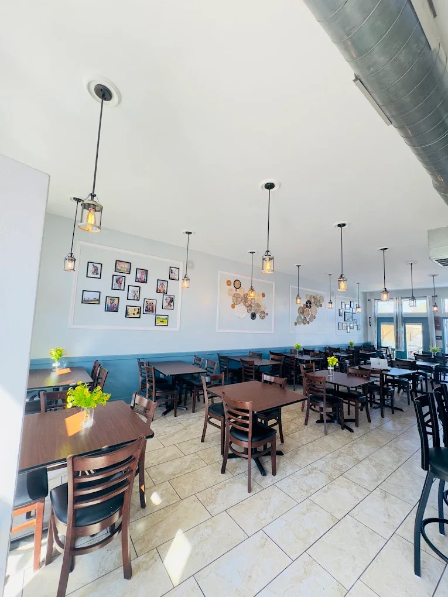
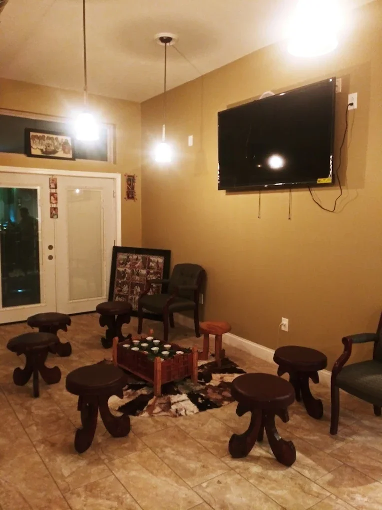
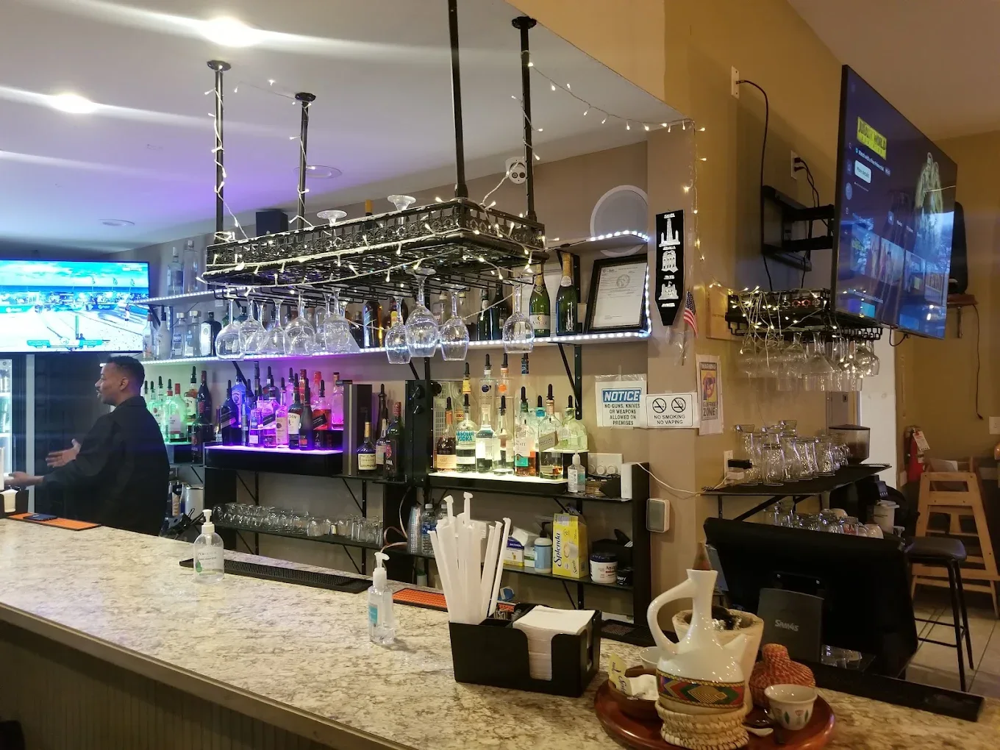
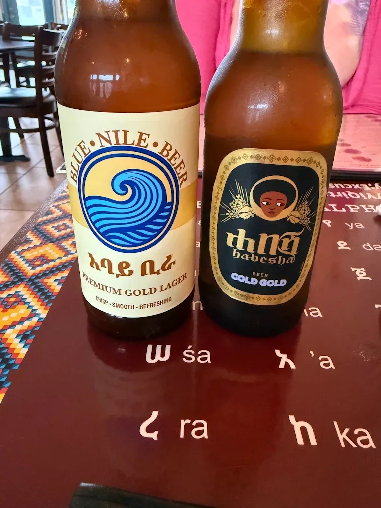

Tibs & special dishes
The supplied menu includes awaze tibs, alicha tibs, shekla tibs and chicken tibs.
COLUMBUS, OHIO · ETHIOPIAN RESTAURANT
A closer look at Ethiopian food, traditional coffee and the restaurant space.
Browse the community-supplied photographs and menu images, then contact the restaurant to confirm your visit.

FROM THE UPLOADED MENU
The supplied menu includes awaze tibs, alicha tibs, shekla tibs and chicken tibs.
Browse the original menu pages for main dishes, breakfast and accompaniments.
See the traditional coffee service, dining area and restaurant exterior in the gallery.
FOOD · COFFEE · INTERIOR
Select a photograph to open the full-size image.

Ethiopian platter with injera
Meat, rice and salad platter
Traditional Ethiopian coffee service
Restaurant exterior
Restaurant dining room
Restaurant seating area
Restaurant bar area
Bottled beveragesPhotographs supplied for this community profile. Capture dates and photographer credits were not supplied.
PLAN YOUR VISIT
Hours: Please call to confirm.
This is a Habesha Hub community profile, not the restaurant’s official website. No sponsorship or owner approval is claimed.
Address and phone cross-checked against public directories on October 1, 2026. Operating status remains unconfirmed.
Tripadvisor listing ↗ · Waze listing ↗
Suggest an update or claim this listing →